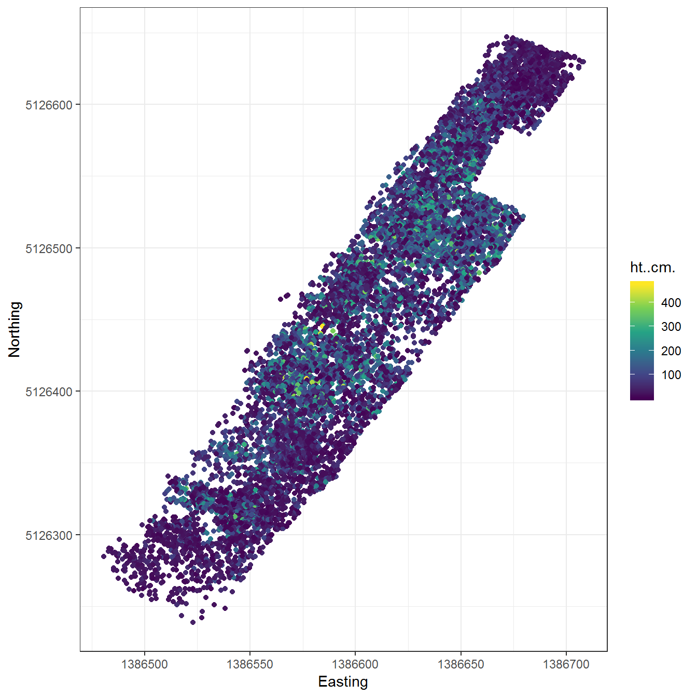
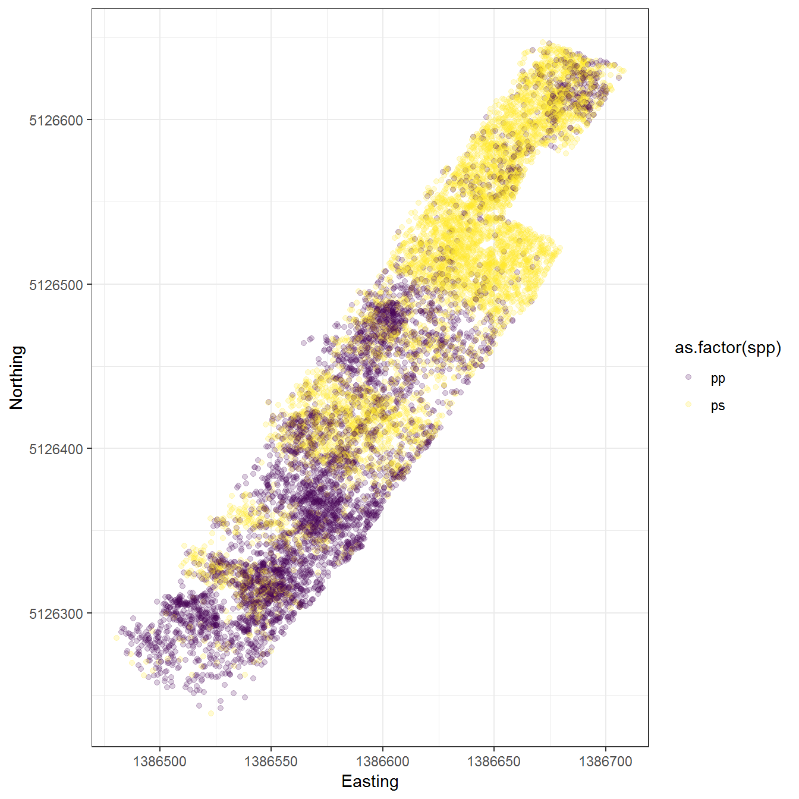
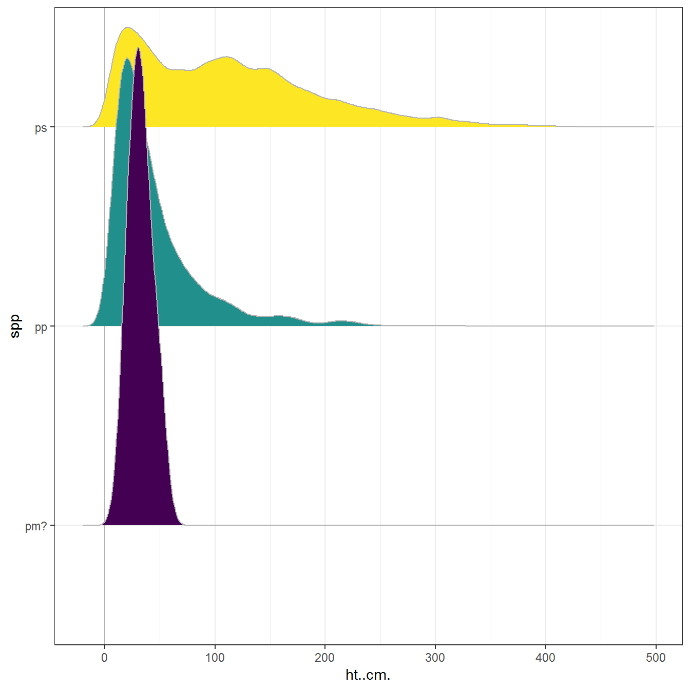
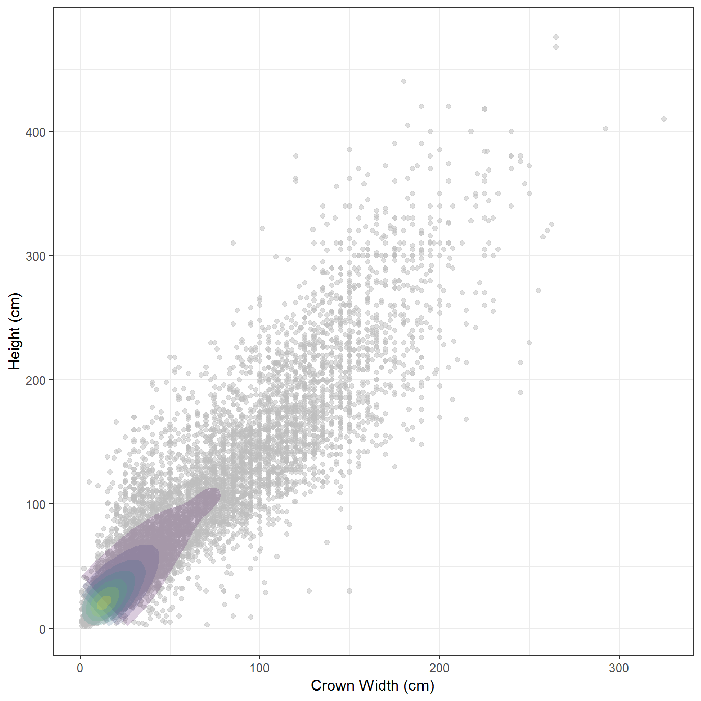

Last updated: 2018-09-11
workflowr checks: (Click a bullet for more information) ✔ R Markdown file: up-to-date
Great! Since the R Markdown file has been committed to the Git repository, you know the exact version of the code that produced these results.
✔ Environment: empty
Great job! The global environment was empty. Objects defined in the global environment can affect the analysis in your R Markdown file in unknown ways. For reproduciblity it’s best to always run the code in an empty environment.
✔ Seed:
set.seed(20180911)
The command set.seed(20180911) was run prior to running the code in the R Markdown file. Setting a seed ensures that any results that rely on randomness, e.g. subsampling or permutations, are reproducible.
✔ Session information: recorded
Great job! Recording the operating system, R version, and package versions is critical for reproducibility.
✔ Repository version: 643a31a
wflow_publish or wflow_git_commit). workflowr only checks the R Markdown file, but you know if there are other scripts or data files that it depends on. Below is the status of the Git repository when the results were generated:
Ignored files:
Ignored: .Rproj.user/
Ignored: docs/figure/
Unstaged changes:
Modified: .gitignore
| File | Version | Author | Date | Message |
|---|---|---|---|---|
| Rmd | 643a31a | jonathandash | 2018-09-11 | Add first ground truth |
This R markdown file will form the start of analysis on the ground truth dataset for the Tekapo study site. This analysis forms part of the draft paper being developed on Overleaf https://www.overleaf.com/18587357pvxwqknxrpnf#/70031738/.
Field data was collected at the study site between xx November 2017 and 18 August 2018. The objective of the field survey was to provide a total census of a first order invasion event from a P. sylvestris shelter belt in an open grassland environment. Aerial imagery was used to manually identify the approximate spread fan of the invasion front. This was used to define the boundary for an on ground systematic search of the study area. Excluding the shelter belt all exotic conifers in the area of interest were identified down to a height of 0.05 m. The location of each individual was recorded using a Trimble Geo 7X GNSS unit. At least 100 fixes were recorded for each individual and points were then differentially corrected using a local base station network maintained by Land Information New Zealand (LINZ). In addition to the tree location detailed information on the properties of each tree were measured. The total tree height, diameter at breast height (DBH) for suitable individuals, root collar diameter (RCD), and canopy width were all measured. In addition the species and health status of all trees was noted and the age of each tree was estimated using the number of branch whorls. The objective of this field data collection was to provide ground truth data suitable for developing methods for tree detection of all exotic conifers in the area of interest based on the remotely sensed data available.
[1] "In the field data dataframe there are 10155 records" FID spp alive ht..cm. dia1
Min. : 0 pa : 1 a:9783 Min. : 2.00 Min. : 1.00
1st Qu.: 2540 pd : 1 x: 372 1st Qu.: 25.00 1st Qu.: 16.00
Median : 5092 pm : 2 Median : 54.00 Median : 35.00
Mean : 5087 pm?: 5 Mean : 82.18 Mean : 54.94
3rd Qu.: 7630 pn : 1 3rd Qu.:120.00 3rd Qu.: 82.00
Max. :10169 pp :4598 Max. :476.00 Max. :360.00
ps :5547
dia2 coning age cluster veg
Min. : 1.00 n:9722 Min. : 2.000 Min. :2.000 :3302
1st Qu.: 15.00 y: 433 1st Qu.: 4.000 1st Qu.:2.000 t :1581
Median : 30.00 Median : 4.000 Median :2.000 grass :1426
Mean : 50.57 Mean : 4.839 Mean :2.409 tuss :1416
3rd Qu.: 80.00 3rd Qu.: 5.000 3rd Qu.:3.000 g :1155
Max. :300.00 Max. :10.000 Max. :9.000 pine : 646
NA's :1 NA's :10093 NA's :9092 (Other): 629
comment Max_PDOP Max_HDOP
:10137 Min. :0.900 Min. :0.500
sampletaken : 6 1st Qu.:1.700 1st Qu.:0.900
sample : 5 Median :2.000 Median :1.100
likesampletak: 2 Mean :2.326 Mean :1.221
sharpbud : 2 3rd Qu.:2.700 3rd Qu.:1.300
possybly pm? : 1 Max. :7.000 Max. :5.900
(Other) : 2
Corr_Type Rcvr_Type
L1 Postprocessed Carrier Float : 1 Geo 7X (H-Star):10155
L1L2 Postprocessed Carrier Float:10130
Postprocessed Code : 24
GPS_Date GPS_Time Update_Sta Feat_Name
16/05/2018 0:00: 611 10:01:55am: 6 New:10155 Point_ge:10155
15/05/2018 0:00: 602 04:00:36pm: 4
17/05/2018 0:00: 552 08:31:04am: 4
15/02/2018 0:00: 526 08:49:08am: 4
13/02/2018 0:00: 509 10:13:43am: 4
14/02/2018 0:00: 475 10:49:38am: 4
(Other) :6880 (Other) :10129
Datafile Unfilt_Pos Filt_Pos
TEKAPO 1.cor : 290 Min. : 15.00 Min. : 15.00
TEKAPO WLDING 2.cor :1689 1st Qu.: 26.00 1st Qu.: 26.00
TEKAPO_WILDING_20180:4249 Median : 40.00 Median : 40.00
TEKAPO2.cor :1801 Mean : 38.01 Mean : 38.01
TEKAPOWILDINGS3.cor :2070 3rd Qu.: 42.00 3rd Qu.: 42.00
TEST5.cor : 2 Max. :309.00 Max. :309.00
TW4.cor : 54
Data_Dicti GPS_Week GPS_Second GNSS_Heigh
Generic:10155 Min. :1986 Min. : 89014 Min. : 19.41
1st Qu.:2000 1st Qu.:181967 1st Qu.:810.98
Median :2001 Median :262443 Median :813.47
Mean :2001 Mean :265988 Mean :813.56
3rd Qu.:2007 3rd Qu.:341749 3rd Qu.:816.50
Max. :2013 Max. :522868 Max. :819.19
Vert_Prec Horz_Prec Std_Dev Northing
Min. :0.1000 Min. :0.1000 Min. :0.000e+00 Min. :5126239
1st Qu.:0.1000 1st Qu.:0.1000 1st Qu.:0.000e+00 1st Qu.:5126362
Median :0.1000 Median :0.1000 Median :0.000e+00 Median :5126456
Mean :0.1012 Mean :0.1001 Mean :9.847e+10 Mean :5126463
3rd Qu.:0.1000 3rd Qu.:0.1000 3rd Qu.:0.000e+00 3rd Qu.:5126533
Max. :0.4000 Max. :0.3000 Max. :1.000e+15 Max. :5180023
Easting Point_ID Offset
Min. :1386481 Min. : 1.0 Mode:logical
1st Qu.:1386566 1st Qu.: 167.0 NA's:10155
Median :1386604 Median : 386.0
Mean :1386641 Mean : 615.3
3rd Qu.:1386647 3rd Qu.:1008.0
Max. :1568357 Max. :2070.0
Of the 10155 trees assessed only 433 were coning. The table below summarises the tree biometry recorded. This still needs to be cleaned up. Consider calculating canopy volume based on crown width, the assumption that the canopy continues to the floor and and assumed parabolic canopy shape. Keep thinking about whether this is useful. Could be interesting to validate this against alpha shapes from the ALS as this could guide spraying?
| spp | alive | n | H | D1 | D2 | CW |
|---|---|---|---|---|---|---|
| pa | a | 1 | 256.00000 | 190.00000 | 170.00000 | 275.00000 |
| pd | a | 1 | 370.00000 | 210.00000 | 210.00000 | 315.00000 |
| pm | a | 2 | 26.00000 | 35.50000 | 32.00000 | 51.50000 |
| pm? | a | 5 | 32.40000 | 29.40000 | 27.00000 | 42.90000 |
| pn | a | 1 | 24.00000 | 14.00000 | 12.00000 | 20.00000 |
| pp | a | 4342 | 45.89567 | 29.46039 | NA | NA |
| pp | x | 256 | 54.40625 | 34.44141 | 22.60547 | 45.74414 |
| ps | a | 5431 | 112.76487 | 76.46842 | 71.00331 | 111.97008 |
| ps | x | 116 | 69.00862 | 45.43966 | 30.81897 | 60.84914 |
Check the spatial distribution of the trees. This shows thatsome of the points are in the wrong place. two points are in completely the wrong place. This was most likely a trial in Chch and will be safely removed with a simple filter df<-subset(df,Northing>5160000).

Think about plotting the tree size distributions and relationships for additional insight.
Picking joint bandwidth of 7.31
Warning: Removed 1 rows containing non-finite values (stat_density2d).Warning: Removed 1 rows containing missing values (geom_point).
sessionInfo()R version 3.5.1 (2018-07-02)
Platform: x86_64-w64-mingw32/x64 (64-bit)
Running under: Windows 10 x64 (build 14393)
Matrix products: default
locale:
[1] LC_COLLATE=English_New Zealand.1252
[2] LC_CTYPE=English_New Zealand.1252
[3] LC_MONETARY=English_New Zealand.1252
[4] LC_NUMERIC=C
[5] LC_TIME=English_New Zealand.1252
attached base packages:
[1] stats graphics grDevices utils datasets methods base
other attached packages:
[1] bindrcpp_0.2.2 ggjoy_0.4.1 ggridges_0.5.0 knitr_1.20
[5] forcats_0.3.0 stringr_1.3.1 dplyr_0.7.6 purrr_0.2.5
[9] readr_1.1.1 tidyr_0.8.1 tibble_1.4.2 ggplot2_3.0.0
[13] tidyverse_1.2.1 here_0.1
loaded via a namespace (and not attached):
[1] Rcpp_0.12.17 lubridate_1.7.4 lattice_0.20-35
[4] assertthat_0.2.0 rprojroot_1.3-2 digest_0.6.15
[7] psych_1.8.4 R6_2.2.2 cellranger_1.1.0
[10] plyr_1.8.4 backports_1.1.2 evaluate_0.10.1
[13] httr_1.3.1 highr_0.7 pillar_1.3.0
[16] rlang_0.2.1 lazyeval_0.2.1 readxl_1.1.0
[19] rstudioapi_0.7 whisker_0.3-2 R.utils_2.6.0
[22] R.oo_1.22.0 rmarkdown_1.10 labeling_0.3
[25] foreign_0.8-70 munsell_0.5.0 broom_0.4.5
[28] compiler_3.5.1 modelr_0.1.2 pkgconfig_2.0.1
[31] mnormt_1.5-5 htmltools_0.3.6 tidyselect_0.2.4
[34] workflowr_1.1.1 viridisLite_0.3.0 crayon_1.3.4
[37] withr_2.1.2 MASS_7.3-50 R.methodsS3_1.7.1
[40] grid_3.5.1 nlme_3.1-137 jsonlite_1.5
[43] gtable_0.2.0 git2r_0.23.0 magrittr_1.5
[46] scales_0.5.0 cli_1.0.0 stringi_1.1.7
[49] reshape2_1.4.3 xml2_1.2.0 tools_3.5.1
[52] glue_1.2.0 hms_0.4.2 parallel_3.5.1
[55] yaml_2.1.19 colorspace_1.3-2 rvest_0.3.2
[58] bindr_0.1.1 haven_1.1.2 This reproducible R Markdown analysis was created with workflowr 1.1.1